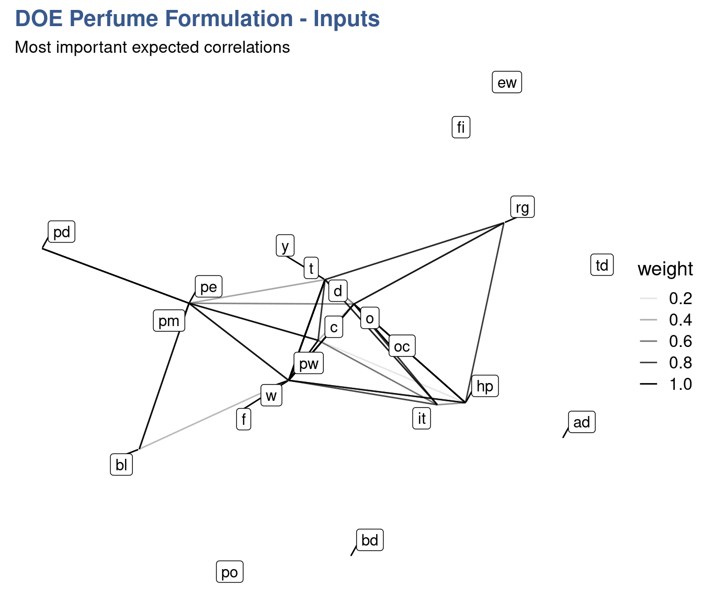

Design for Six Sigma
Quality tools have been grouped under varied names and methodologies being Six Sigma one of the most well known and comprehensives ones. The domain is vast as seen in the many tools collected and described in the Six Sigma book by Roderik A.Munro and J.Zrymiak (2015). For this section we’ve selected a few cases that strongly support Measurement System Analysis, Design of Experiments and Statistical Process Control. Beside supporting the remaining sections, they also pretend to showcase how R can be used also for other purposes than data wrangling and visualization in the domain of industrial data science, typically to obtain easily reproducible diagrams.
We start with a case on a dial workshop in the watch making industrial where the pareto chart comes handy. We then move to a dental prosthesis laboratory to see how a simple fishbone diagram can help pinpoint special causes of the measurement variation of an optical device and we finish we two different approaches on how to optimize experiment execution by assess the correlation between the outputs in order to minimize the parameters to measure.
Pareto analysis
Case study: dial polishing workshop
Watch dials are received from the stamping process and polished before being sent to the final assembly. As part of the autonomous quality control performed by the polishing operators a count of the defects observed on the dials each day is logged in a spreadsheet.

The pareto chart has always proven an effective way of defining priorities and keeping workload under control. It is known for helping focusing on the few important elements that account for most problems. It builds on the well known insight that a few reasons explain or allow to control most of the outcome. This applies particularly well in the technological and industrial context.
Often in workshop setups the priorities of day are set by the informal discussions between team members. It is important to be sensitive to the last problem observed or the latest request from management but it is also important to look at data, particularly over a period of time. When looking at simple things as counts and frequencies we sometimes get surprised of how different our perception is from the reality shown by the data collected.
Collecting data can be done in many different forms and there’s no right or wrong. It can be noted on a board, log book, spreadsheet or in a dedicated software.
In a dial polishing workshop of a watchmaking manufacture, the assembly operators have been collecting dial defects in a spreadsheet. Logging a defect doesn’t mean the dial is directly scrapped. Putting away parts has strong impact on the cost of the operation and has to be done on clear criteria. Sometimes the parts can be rework with minor effort. The datalog corresponds to the status of the dials as they arrive from the stamping and before entering the polishing operation. Their dataset with the name dial_control shows each dial unique number and the general and defect information noted by the operators.
Collecting defects
All datasets are available by loading the book companion package with library(industRial). Full instructions in the datasets session.
head(dial_control) %>%
kable(align = "c",
caption = "dial control data",
booktabs = T)| Operator | Date | Defect | Location | id |
|---|---|---|---|---|
| Jane | 2018.01.31 | Indent | 3h | D2354 |
| Jane | 2018.02.02 | Indent | 3h | D2355 |
| Jane | 2018.02.02 | Indent | 4h | D2356 |
| Peter | 2018.02.02 | Indent | 10h | D2357 |
| Jane | 2018.02.03 | Scratch | 3h | D2358 |
| Jane | 2018.02.03 | Indent | 3h | D2359 |
We can see that the count includes both the deffect type and the location (the hour in the dial) and that it is traced to the day and operator.
The team leader promotes a culture of fact based assessment of the quality measurements. Every week the team looks back and observes the weekly counts. When the quantity of data get bigger trends to start becoming apparent. The team can discuss potential actions and prepare reporting to the supplier of the parts (the stamping workshop). It also helps calibrating between operators and agreeing on acceptance criteria and what is and what is not a defect.
Recently there have been lots of talk about scratched dials and there’s a big focus on how to get rid of them. For their weekly review Christophe has prepared a pareto chart in R.
Pareto chart
See {qicharts2} for more details on this R package
library(qicharts2)d_type <- dial_control %>% pull(Defect) %>% as.character()
d_type_p <- paretochart(d_type,
title = "Watch dial Defects",
subtitle = "Pareto chart",
ylab = "Percentage of deffects",
xlab = "Deffect type",
caption = "Source: dial polishing workshop")
d_type_p +
theme_industRial()As often happens we can see that the first two defects account for more than 80% of the problems. Scratching levels are in fact high but they realize indentation is even higher. Is it clear what indentation is? Have we been noting sometimes indentation for scratches? Where to draw the line? and are the causes of these two defects the same?
The decides to go deeper in the analysis and Peter says that a potential cause is the fixing tool that holds the dial on the right. To check Peter’s hypothesis Jane prepares another plot by location for the next week review.
d_location <- dial_control %>% pull(Location) %>% as.character()
d_location_p <- paretochart(d_location,
title = "Watch dial deffects",
subtitle = "Pareto chart",
ylab = "Percentage of deffects",
xlab = "Deffect location (hour)",
caption = "Source: Dial workshop")
d_location_p +
theme_industRial()Effectively there are many defects at 3h corresponding to the position on the right of the dial (and even more at 4h). Peter’s assumption may be right, the team decides to gather in the first polishing workbench and share openly how each of them fixes the dial to try to understand if there is a specific procedure or applied force that creates the defect.
This example shows how data collecting can be simple and effective. if no one in the team is using R yet, a simple pareto chart could be done more simply with a spreadsheet. What R brings is the possibility to quickly scale up: handling very large and constantly changing files for example and also the possibility to directly and simply produce pdf reports or dynamic web applications to collect and visualize the data.
To practice and go further in the exploration of pareto charts checkout the tutorials section.
Root cause analysis
Case study: dental prosthesis laboratory
An optical measurement device has just been installed in a large Dental Prosthesis Manufacturing Laboratory. It is precise but expensive device based on laser technology which has been installed in a dedicated stabilized workbench.

Usually called Fishbone or Ishikawa diagrams this simple tool has proven to be extremely practical and helpful in structuring team discussions.
With it we can easily identify and list the expected influencing factors in various contexts such as the preparation of an experiment design. Selection and grouping input parameters can be useful in defining for example the right mix of ingredients in a new product, in selecting manufacturing parameters in an industrial production line or in the definition of a draft operating procedure for a measurement device. In each of these situations it helps seeing the big picture and not fall into the trap of relying only in the data and findings obtained by statistical analysis.
In this case study we’re exploring the creation of Ishikawa diagrams with the {qcc} package. Emilio L. Cano (2012) recommends the utilization of R even for such simple diagrams with clear arguments on reproducibility and ease of update. If R and programming is already part of the working culture and there’s someone in the team this makes perfect sense.
The lab manager of a dental prosthesis laboratory has acquired a optical device for the precise measurement of the dental impressions that serve as models for the production of the crowns and bridges.
The lab has been having complains and several parts have been returned from the dentists and had to be partially or totally reworked. Besides the potential troubles to patients and the already incurred financial losses there is a reputation loss of which the lab manager is very concerned with. Regardless of all this the acquisition decision has taken more than a year.
After installation and in spite all the precautions it has been reported and now demonstrated with some specific trials that the measurements have a high variation which is preventing putting it in operation. Until now the laboratory team has always had full confidence in the equipment supplier and the Lab Manager has even seen the same equipment operating in another laboratory from the group.
The supplier has been called on site to check the equipment and having seen no reason for the variability proposes to work with the lab team on identifying the potential causes for the high uncertainty in their measurements. They decided to consider a larger scope than just the equipment and take the full measurement method as described in the laboratory operating procedure. They organize a brainstorm, list different reasons related with they’re work and group them.
Brainstorming
operators <- c("Supplier", "Lab Technician", "Lab Manager")
materials <- c("Silicon", "Alginate", "Polyethers")
machines <- c("Brightness", "Fixture", "Dimensional algorithm")
methods <- c("Fixture", "Holding time", "Resolution")
measurements <- c("Recording method", "Rounding", "Log")
groups <- c("Operator", "Material", "Machine", "Method", "Measurement")
effect <- "Too high uncertainty"One of the team members is using R and he has generating all previous reports on the topic with R markdown. He simply adds to the last report a call to the {qcc} package and quickly obtains a simple diagram that allows for a quick visualization of these influencing factors.
Ishikawa digram
library(qcc)cause.and.effect(
title = "Potential causes for optical measurement variation",
cause = list(
Operator = operators,
Material = materials,
Machine = machines,
Method = methods,
Measurement = measurements
),
effect = effect
)
The listed factors can now be addressed either one by one or in combined experiments to evaluate their impact on the measurement method. The lab team has decided to assess the method robustness to the brightness and to the dimensional algorithm and will prepare an experiment design with several combinations of these parameters to evaluate them. Using the diagram they can easily keep track of what has been listed, tested and can be eliminated as root cause.
Correlations
Case study: perfume distillation experiment
A Project Manager in perfume formulation needs to understand in detail the impact of the perfume manufacturing line parameters variation (e.g. temperature, pressure and others) in typical perfume sensorial characteristics such as the floral notes.

A correlation matrix is a way to discover relationships between groups of items. Such matrix can also be used to select which output measurement should be done in priority in a design of experiments (DOE). In exploratory phases when the experiments are repeated several time with slightly different configurations, secondary outputs that are strongly correlated to main outputs can be eliminated
In an industrial setup the cost of experimenting is often very high. With this approach engineers and scientists can keep the test quantities in control and avoiding measurements until final stages of implementation. We explore in this case study two different techniques, one with a tile plot and another more advanced with a network plot.
A DOE consists in a series of trials where several inputs are combined together and important outputs are measured (further details can be seen in the DOE chapter). Commonly DOE analysis results linking inputs to outputs are presented with effects plots and interaction plots but before getting it is important to check the correlation between the outputs. Often there groups of outputs move together even if there is no cause and effect relationship between them. We can see this correlation in a tile plot.
A team of experts of a manufacturer of fragrances has listed 23 different output variables of interest for an exploratory perfume distillation experiment. Facing such extensive list the Project Manager decided to put the team together a second time to try to set priorities. The approach was to guess the results of the experiment which allowed to go deeper in the technology and to construct an experiment plan in a meaningful way. The experts inputs have been captured in a a two entry table named perfume_experiement.
Matrix
perfume_experiment[1:6, 1:7]%>%
kable(
align = "c",
caption = "perfume DoE correlation matrix of the outputs",
booktabs = T
) | yy | pw | w | pm | pe | f | it |
|---|---|---|---|---|---|---|
| pw | 0 | 10 | 3 | 3 | 2 | 2 |
| w | 0 | 0 | 3 | 3 | 2 | 2 |
| pm | 0 | 0 | 0 | 6 | 6 | 0 |
| pe | 0 | 0 | 0 | 0 | 6 | 0 |
| f | 0 | 0 | 0 | 0 | 0 | 7 |
| it | 0 | 0 | 0 | 0 | 0 | 0 |
In the matrix the experiment output variables are named with coded names made of two letters. They represent the production Line Parameters (e.g. t = temperature, o = opening, pw = power) and the Perfume Attributes (f = flower). We can see in the table what the experts have noted the expected correlation strengths in an unusual way from 1 to 10, with 10 being the highest. In order to prepare a visual representation with a tile plot from {ggplot2} the data is transformed to long format. An additional trick is to convert the values at zero to NA so that they get directly transparent on the plot.
Values at zero in the dataset are converted to type NA_real_ to obtain a transparent background in the the tileplot.
perfume_long <- perfume_experiment %>%
pivot_longer(
cols = -yy,
values_to = "correlation",
names_to = "xx"
) %>%
mutate(correlation = if_else(
correlation == 0, NA_real_, correlation)) %>%
mutate(correlation = as_factor(correlation))Tileplot
perfume_long %>%
ggplot(aes(x = xx, y = yy, fill = correlation)) +
scale_fill_viridis_d(direction = -1, name = "Correlation\nStrength") +
geom_tile() +
labs(
title = "The Perfume destilation experiment",
subtitle = "Output variables correlation plot ",
x = "",
y = "",
caption = "Anonymised data"
) +
theme_industRial()The plot shows that many parameters are expected to move together. Looking in detail the flow aroma moves together with other sensory attributes such as hp, o and oc. After this first DoE the real correlations will be established and the team expects to be able to avoid a significant part of the measurements that have a correlation higher than 50% from the second DoE onward.
Clustering
In this second analysis of the perfume distillation experiment we present a more advanced but more powerful approach using network plots. It explores an automatic way to clustering the variables and a specific way to present such clusters.
Technically we’re going to build a weighed non directional network(tbl_graph) object. Several steps of conversion are required for this approach first with functions from various packages from the networks domain.
library(igraph)
library(tidygraph)
library(ggraph)The first step consists in converting the “Perfume” tibble to a matrix format:
The perfume_experiment is originaly coded as a tibble object.
perfume_matrix <- perfume_experiment %>%
column_to_rownames("yy") %>%
as.matrix()Then using the {igraph} package we convert the matrix into a graph object:
perfume_graph <- graph_from_adjacency_matrix(
perfume_matrix, mode = "undirected", weighted = TRUE
)to finally convert it into a tibble graph with {tidygraph} package:
perfum_tbl_graph <- as_tbl_graph(perfume_graph, add.rownames = "nodes_names")As mentioned the experts have provided the correlation strength in the unusual scale from 1 to 10 which was easier for them during discussion. Here we’re here converting it back to the 0 to 1 which is more common in the statistics community. For simplicity, negative correlations were not considered just the strength, enabling the network to be unidirectional.
perfum_tbl_graph <- perfum_tbl_graph %>%
activate(edges) %>%
mutate(weight = weight/10)
perfum_tbl_graph# A tbl_graph: 22 nodes and 85 edges
#
# An undirected simple graph with 7 components
#
# Edge Data: 85 x 3 (active)
from to weight
<int> <int> <dbl>
1 1 2 1
2 1 3 0.3
3 1 4 0.3
4 1 5 0.2
5 1 6 0.2
6 1 8 0.8
# ... with 79 more rows
#
# Node Data: 22 x 1
name
<chr>
1 pw
2 w
3 pm
# ... with 19 more rowsIn the previous chunk output we see a preview of the tibble graph object with the first few nodes and edges. Now we create a vector with various igraph layouts to allow for easier selection when making the plots:
igraph_layouts <- c('star', 'circle', 'gem', 'dh', 'graphopt', 'grid', 'mds',
'randomly', 'fr', 'kk', 'drl', 'lgl')and do a first network plot to check data upload:
perfum_tbl_graph %>%
ggraph::ggraph(layout = "igraph", algorithm = igraph_layouts[7]) +
geom_edge_link(aes(edge_alpha = weight)) +
geom_node_label(aes(label = name), repel = TRUE) +
# theme_graph() +
labs(title = "DOE Perfume Formulation - Inputs",
subtitle = "Most important expected correlations")
Data loading is now confirmed to have been done correctly and we can now move into the clustering analysis. We use different clusters algorithms to generate the groups.
Clustering algorithms
perfum_tbl_graph <- perfum_tbl_graph %>%
activate(nodes) %>%
mutate(group_components = group_components(),
group_edge_betweenness = group_edge_betweenness(),
group_fast_greedy = group_fast_greedy(),
group_infomap = group_infomap(),
group_label_prop = group_label_prop(),
group_leading_eigen = group_leading_eigen(),
group_louvain = group_louvain(),
group_walktrap = group_walktrap()
)There’s extensive research behind of each of these algorithms and detailed information can be obtained starting simply with the R help system. For example for one selected here type ?group_louvain or ?cluster_louvain on the console. Digging deeper it is possible to find the author names and the papers explaining how and when to use them.
To produce the final plot some trial and error is needed to select the algorithm that gives the best clustering results. Now for the final step we also need to load some specific support packages for advanced plotting.
library(ggforce)
library(ggtext)Network plot
perfum_tg_2 <- perfum_tbl_graph %>%
activate(edges) %>%
mutate(weight2 = if_else(weight >= 0.8, 1, if_else(weight >= 0.5, 0.5, 0.1)))
my_palette <- c(viridis(12)[3], viridis(12)[9],
"gray40", "gray40", "gray40", "gray40",
"gray40", "gray40", "gray40", "gray40")
set.seed(48)
perfum_tg_2 %>%
activate(nodes) %>%
mutate(group = group_louvain) %>%
filter(group %in% c(1,2)) %>%
ggraph(layout = "igraph", algorithm = igraph_layouts[7]) +
geom_mark_hull(mapping = aes(x, y,
group = as_factor(group),
fill = as_factor(group)),
concavity = 0.5,
expand = unit(4, 'mm'),
alpha = 0.25,
colour = 'white',
show.legend = FALSE) +
geom_edge_link(aes(edge_alpha = weight2, edge_width = weight2)) +
geom_node_point(size = 3) +
geom_node_label(aes(label = name), repel = TRUE) +
scale_edge_width(range = c(0.2, 1), name = "Correlation strength") +
scale_edge_alpha(range = c(0.05, 0.2), name = "Correlation strength") +
scale_fill_manual(values = my_palette) +
# theme_graph() +
labs(
title = str_c("<span style='color:#433E85FF'>Line Parameters</span>",
" and ", "<span style='color:#51C56AFF'>Perfume Attributes</span>"),
subtitle = "Clustering the outputs of Perfume Formulation DOE01",
caption = "Clustering by multi-level modularity optimisation (louvain)") +
theme(plot.title = element_markdown(family = "Helvetica",
size = 14,
face = "bold")) 
We can see that the algorithm is grouping elements that have a strong correlation. Most stronger correlations are mostly presented within elements of each cluster. This is expected as certain perfume sensorial attributes are strongly correlated and the same for certain Line Parameters.e The code presented can now easily be reused once the DOE is executed to compare with the real correlations measured. Once knowledge is built and confirmed on which outputs are strongly correlated a selection of the key parameters can be done. This strongly simplifies the experiments by reducing the number of outputs to measure and reduces the cost and lead time of new formulations.